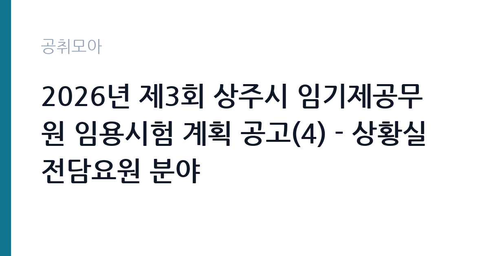

[지자체] 2026년 제3회 상주시 임기제공무원 임용시험 계획 공고(4) - 상황실 전담요원 분야
경상북도 상주시 · 경북 · 마감 2026-10-20 (D-15) · 출처 나라일터

한눈에 보는 모집 조건
| 기관 | 경상북도 상주시 |
|---|---|
| 공고명 | 2026년 제3회 상주시 임기제공무원 임용시험 계획 공고(4) - 상황실 전담요원 분야 |
| 고용형태 | 임기제 |
| 근무지 | 경북 |
| 게시일 | 2026-10-06 |
| 마감일 | 2026-10-20 (D-15) |
지원자격, 이렇게 읽으세요
- 시간선택제임기제 마급 4명
- 접수 ~2026-10-20 마감
- 세부 조건은 원문 공고문 확인
상황실 전담요원은 학력이나 전공 제한이 비교적 적은 경우가 많지만, 방재나 안전, 무전통신, 행정 실무 경력이 있으면 서류에서 강점이 됩니다. 컴퓨터 활용 능력과 상황보고서 작성 경험도 평가 요소가 될 수 있습니다. 확정 응시자격과 우대 조건은 원문 공고문에서 확인하셔야 합니다.
이 공고의 포인트
이 공고의 가장 큰 매력은 4명이라는 모집 인원입니다. 1명 모집 공고보다 서류 통과 가능성이 상대적으로 넓어집니다. 마급은 9급 상당이며 시청 안전재난실 소속으로 재난과 안전사고 상황을 접수하고 보고하는 일을 맡습니다. 임용 기간은 2년이고 최대 5년까지 연장될 수 있습니다.
전형은 어떻게 진행되나
전형은 서류전형과 면접시험으로 진행되며 필기시험이 없습니다. 접수는 2026년 10월 19일부터 10월 20일까지 단 이틀이므로 미리 준비하셔야 합니다. 접수 방법과 제출처는 원문에서 확인하시기 바라며, 문의처는 상주시 총무과 054-537-7163입니다.
원문에서 확인한 전형 방식
○ 모집분야: 상황실 전담요원 (4명) ○ 근무지역: 경북 상주시 (상주시청 안전재난실) ○ 임용기간: 2년(최대 5년) ○ 선발방법: 서류전형 및 면접시험 ○ 접수기간 : 2026년 10월 19일 ~ 2026년 10월 20일 ○ 문의처 : 054-537-7163
이런 분께 추천해요
- 재난안전이나 방재, 상황실 관련 업무에 관심이 많은 분
- 교대근무와 야간 당직이 가능한 체력과 책임감을 갖추신 분
- 행정 실무와 보고서 작성에 익숙하고 상주 정주를 희망하시는 분
지원 전 체크리스트
- 접수 기간이 10월 19일부터 20일까지 단 이틀이므로 서류를 미리 준비하셔야 합니다
- 야간과 휴일을 포함한 교대근무 가능 여부를 본인 일정과 대조하셔야 합니다
- 관련 경력과 컴퓨터 활용 능력을 증빙할 서류를 챙기셔야 합니다
- 시간선택제 근무시간과 보수 수준을 원문에서 확인하고 지원하셔야 합니다
모집 일정과 제출 타이밍
공고 게시일은 2026년 10월 6일이며 원서 접수는 10월 19일부터 20일까지입니다. 이후 서류전형 합격자 발표와 면접시험이 순차적으로 진행됩니다. 4명 모집이라 면접 대상자도 넓게 선정될 수 있으니 서류 완성도에 공을 들이시기 바랍니다.
직무 이해하기: 지자체
상황실 전담요원은 시청 재난안전상황실에서 각종 재난과 안전사고 신고를 접수하고, 현장 상황과 조치 내용을 시스템에 기록하며 상급 기관에 보고합니다. 태풍과 호우, 폭설 같은 자연재난 시기에는 24시간 비상근무 체계에 들어갑니다. 폐쇄회로텔레비전 관제와 재난문자 발송 보조, 일일 상황일지 작성도 담당 업무에 포함될 수 있습니다. 비상근무 시에는 식사와 휴식 시간이 불규칙해질 수 있으므로 체력 관리가 중요하며, 상황실 근무가 현장과 무전으로 연결되는 긴장감 있는 자리임을 염두에 두시기 바랍니다.
자기소개서 작성 팁
자기소개서에는 긴박한 상황에서 침착하게 대응했던 경험을 중심으로 적으시기 바랍니다. 민원 응대나 야간 근무, 비상 상황 지원 사례가 있다면 구체적인 역할과 결과를 함께 기술하시면 좋습니다. 시민 안전을 지킨다는 사명감과 교대근무에 대한 준비된 자세를 분명히 밝히시기 바랍니다.
면접 준비 포인트
면접에서는 재난 발생 시 본인이 가장 먼저 할 일을 묻는 상황 질문이 나올 수 있습니다. 접수와 보고, 전파라는 상황실 업무의 기본 순서를 숙지하고 답변하시기 바랍니다. 야간과 휴일 근무에 대한 의지와 상주 지역 재난 특성에 대한 관심을 보여주시면 좋은 인상을 남기실 수 있습니다.
급여·근무조건 읽는 법
시간선택제임기제 마급은 9급 상당으로 지방공무원보수규정의 9급 1호봉 하한액을 기준으로 보수가 책정됩니다. 시간선택제는 실제 근무시간 비율만큼 보수를 받으며, 야간과 휴일 근무가 발생하면 관련 수당이 지급될 수 있습니다. 정확한 월 보수액과 교대 수당 지급 여부는 원문 공고문에서 확인하셔야 합니다. 출처는 지방공무원보수규정과 임기제 보수 안내 자료입니다.
자주 묻는 질문
- 상황실 전담요원은 교대근무를 합니까
재난상황실은 24시간 운영되므로 교대나 당직 가능성이 높습니다. 확정 근무 형태는 원문 공고문에서 확인하시기 바랍니다. - 관련 전공이 아니어도 지원할 수 있습니까
전공 제한이 적은 경우가 많지만 확정 응시자격은 원문 공고문의 자격 요건표에서 확인하시기 바랍니다. - 4명을 모두 채용합니까
공고상 모집 인원은 4명이며 적격자가 없을 경우 변동될 수 있습니다. 확정 사항은 상주시 공고를 확인하시기 바랍니다.
함께 보면 좋은 공고
[지자체] 2026년 제3회 상주시 임기제공무원 임용시험 계획 공고(6) - 학예연구 분야 — 마감 2026-10-20[지자체] 2026년 상주시 임기제공무원 임용시험 계획 공고(5) - 중앙제어실 운영 분야(상수도) — 마감 2026-10-20[지자체] 2026년 제3회 상주시 임기제공무원 임용시험 계획 공고(3) - 외국인 계절근로자 전담 분야 — 마감 2026-10-20출처: 나라일터 공개정보를 바탕으로 공취모아가 정리한 안내글입니다. 모집 조건·일정은 변경될 수 있으니 지원 전 반드시 원문 공고문을 확인하세요. 본 글은 정보 제공용이며 합격을 보장하지 않습니다.